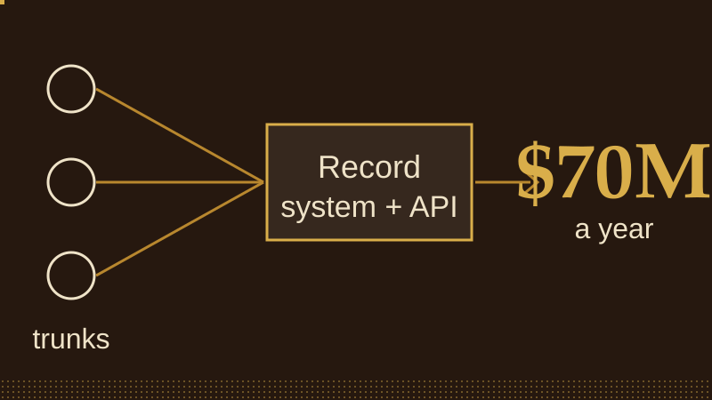

Carrier Trunk Provisioning Tool
The record system and API behind a $70M-a-year revenue line. I built it alone.
- Internal tool. No public link.

The problem
A carrier trunk is a connection that carries voice traffic between a carrier’s network and another network. A revenue line worth $70M a year depends on those trunks being provisioned correctly.
That takes one place that holds the truth about every trunk, and a way for other systems to ask it questions and make changes.
What I built
The Carrier Trunk Provisioning Tool is the record system for carrier trunk provisioning, with a REST API on top. I built it solo, from scratch, in Python.
It ships through a gated CI/CD pipeline. Every release runs 300+ automated tests first, and I took the manual deploy steps down to zero.
- 1developer: me, from the records to the API
- 300+automatic tests before every release
- 0manual deploy steps left
How it works
There are two paths to follow. The first is how a trunk becomes revenue. The second is how a change reaches production.
Carrier trunks
The connections that carry voice traffic. Each one has a record.
Record system
One place that holds the record for every trunk. It is the system of record.
REST API
Written in Python. Other tools read and change records through the API.
- $70M
A year in revenue
The revenue line that depends on trunk provisioning.
A change
A code change is ready to ship.
- 300+
Automatic tests
Run before every release, with no one clicking through steps.
The gate
A release goes out only when the tests pass.
- 0
Manual deploy steps
Deploying is automatic. I drove the manual steps to zero.
Results
- $70Ma year in revenue it backs
- 1developer: me
- 300+automatic tests before every release
- 0manual deploy steps left
What I owned
- Built the Carrier Trunk Provisioning Tool on my own, from scratch, in Python.
- Designed the record system and the REST API on top of it.
- Built the release pipeline: gated CI/CD with 300+ automated tests before every release.
- Took manual deploy steps to zero.
What I learned
- A system of record earns trust by being right every time. Tests before every release matter more than speed.
- When one person owns a whole system, the pipeline is how you stay safe. It checks the work when nobody else is looking.